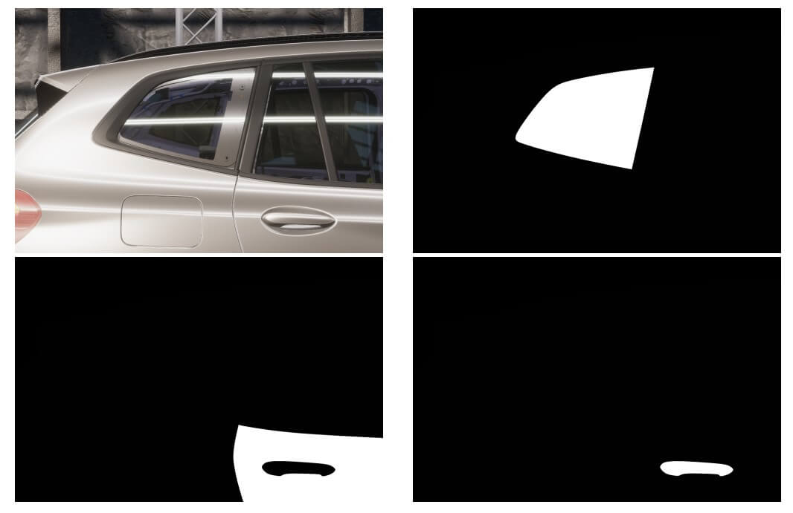
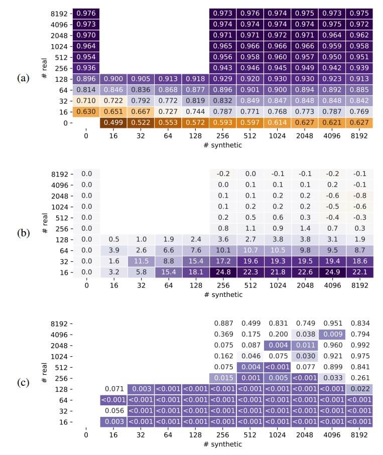
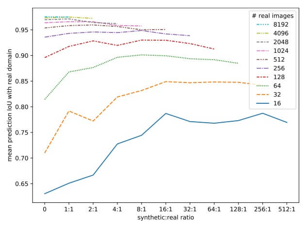

资源
全文
Abstract
-
从 3D 模型渲染的真实合成图像数据可用于增强图像集和训练图像分类语义分割模型。
-
我们探索了高质量的基于物理的渲染和领域随机化如何有效地基于真实车辆的生产 3D CAD 模型创建大型合成数据集。
-
使用该数据集来量化使用 U-net 和 Double-U-net 模型的合成增强的有效性。
-
在受益于增量训练或模型专业化的用例中，在合成图像上预训练基本模型大大降低了迁移学习的训练成本，允许高达 90% 的模型训练前置。
1. Introduction
本文的部分组织如下。
- 第二节描述了与深度学习系统、合成数据生成以及本文中使用的特定模型相关的概念。
- 第三节介绍了用于生成合成图像的技术和过程。
- 第四节展示了合成数据如何增强真实图像以提高模型精度。
- 第五节将这些结果与使用预训练模型和迁移学习的技术进行了比较。
- 第六节总结了我们的主要成果，并提出了有待探索的进一步问题。
2. Background And Related Work
- 纯合成数据集训练
- 混合合成数据集和真实数据集
- 预训练模型
Jhang 等人演示了使用 Unity Perception 注释的合成图像和 Unity Simulation 按比例生成的合成图像来训练 Faster R-CNN 对象检测模型。
他们发现，虽然纯在大（400000）组合成图像上训练的模型在遮挡和低光照的情况下检测物体的表现不佳，但与纯在小（760）组真实图像上训练模型相比，用少量真实图像增强合成图像显著提高了检测精度。
他们的工作受到了 Hinterstoisser 等人的启发，并对其进行了补充，后者描述了一种领域随机化的方法，通过组成随机对象的背景，感兴趣的对象在其前面被渲染和标记。
长期以来，3D 场景的渲染图像已被用于训练对象检测模型。最近，3D 渲染技术的进步使真实感图像的生成变得实用。其他研究人员已经将全域随机化应用于合成图像生成，并取得了不同程度的成功。我们的方法是全域随机化和真实感渲染的混合，改变照明和主题/背景方向，并从一组真实纹理中随机采样。
3. Synthetic Image Generation
在本节中，我们描述了为创建合成图像而开发的工具和工作流程，然后是验证输出图像并使用生成的数据训练深度学习模型的实验设计。使用的软件包括 Unity 2020.1、Unity 高清渲染管道（HDRP）7.4.1 和 PiXYZ 插件 2019.2.1.14。
借助 Pixyz 的软件，可以在 Unity 中快速导入、准备和优化大型 CAD、网格和点云模型，实现实时可视化。
A. 3D Modeling
图像生成器是在 Unity 3D 游戏开发平台中构建的一组场景描述、模型和脚本。
对于我们的用例，使用 PiXYZ 插件将车辆模型从其原生 CATIAv5 CAD 格式转换为 Unity 资产。由于将零件材质映射到 Unity 纹理的技术困难（这是当前工作的一个领域），导入 CAD 对象相对来说是劳动密集型的。我们的工作是手动为导入的 Unity 资产中的大约 10000 个可见表面指定纹理。
B. Realistic Rendering
使用 Unity 的 HDRP 渲染图像。
C. Domain Randomization
选择了一种混合的领域随机化方法，在与生产环境相似的环境光照下尽可能准确地渲染图像主体。
随机化的属性包括：
-
在合理的约束范围内相对于相机的主体位置
-
一组可能值中的车辆外部油漆颜色
-
具有不同位置的单个光源（太阳）。
-
为了将主题与背景分离，我们使用了一个具有非常 “busy” 纹理的背景天空盒，然后为每个场景在所有 3 个轴上随机化其方向。这起到了在车辆所有表面上创建随机反射图案的次要作用。
场景中对象的随机化是通过一组用 C# 编写的脚本完成的，这些脚本在 Unity 中用于游戏逻辑。
D. Segment Labeling
通过从每个随机场景中捕获多个图像来标记图像片段——一个完全渲染的图像，然后每个片段一个假彩色图像。这可以通过多种方式实现，但我们发现在 Unity 中最具性能的方法是保持主题模型的第二个 “mask” 副本，该副本完全用“未发光”的黑色纹理着色，并锁定在与颜色模型相同的位置。
使用了位于相同位置的两台相同的相机，一台能够看到颜色模型、背景和照明，另一台只能看到遮罩模型。
在用彩色相机捕获正常图像之后，片段捕获阶段将遍历包括每个片段的组件组，用未发光的白色纹理对该组进行重新着色，用掩模相机捕获图像，然后将该组重新着色为未发光的黑色纹理。下图显示了生成的图像片段。

4. Model Training
为了验证合成图像生成器的有效性，我们进行了实验，比较了用合成数据增强的不同数量的真实标记图像训练的模型。我们的可用数据由 14125 张生产线上真实车辆的标记图像组成，每张图像都包含八个不同特征类别的一个或多个示例。从该数据集中，随机选择 10% 的保留集来验证模型，在真实数据集 中留下 12712 张图像用于训练。
A. Training Methodology
图像和标签用于训练在 TensorFlow 2.0.0 和 Keras 2.2.4-tf 中实现的 U-net 卷积神经网络模型。模型使用 NVIDIA DGX-2 和运行 Ubuntu 18.04.4LTS 的特斯拉 V100 GPU 进行训练。
B. Real Dataset Supplementation
为了确定用合成图像补充真实图像数据集将如何影响模型训练和准确性，我们用两组图像的不同混合物训练了多个模型类的实例。

在来自真实和合成数据集的随机样本上训练的 U-net 模型的聚合平均预测 IoU (a)。

U-net 模型在真实图像上的平均预测 IoU，通过训练数据集中真实数据与合成数据的比率查看。每个趋势都表现出一个拐点，准确度下降，可能是由于模型涵盖真实域和合成域的能力有限。
5. Transfer Learning
A. U-Net
B. Double-U-Net
6. Conclusions
-
对于这个图像分割问题，合成图像是增强有限的真实训练数据集的有效技术。
-
在纯合成图像上训练的模型在真实验证图像上具有非常低的平均预测 IoU。
-
即使在合成数据集中添加非常少量的真实图像，也会大大提高准确性，并且在用合成图像增强的数据集上训练的模型比单独在真实图像上训练的更准确。
-
对于这个领域，256 到 512 张图像似乎足以训练一个相当准确的模型，在混合中添加合成图像的回报迅速减少，最终随着真实：合成比率的下降，导致精度降低。
-
在受益于增量训练或模型专门化的用例中，我们发现对合成图像的预训练为迁移学习提供了可用的基础模型。虽然我们观察到在单个会话中训练的模型优于在合成图像上预训练和在真实数据上再训练的模型，但我们也看到，在预训练阶段可以完成高达 90% 的总训练时间。
-
我们得出的结论是，当没有足够的图像来训练令人满意的模型时，合成图像生成有利于分割模型的训练。然而，必须进行测试，以找到添加更多合成图像不会导致更高平均精度的临界点。
7. Future Work
这项工作的一个自然进展是研究合成数据的特征，并确定有助于模型准确性的特征，这些特征可以更接近真实领域，同时分离出应该随机化的不太重要的特征。生成对抗性网络（GANs）领域的最新工作可用于自动化特征识别过程，并帮助设计更稳健的合成图像渲染过程。另一个有趣的话题是探索如何将合成图像与其他有效的数据增强技术结合使用，不幸的是，这超出了这项工作的范围